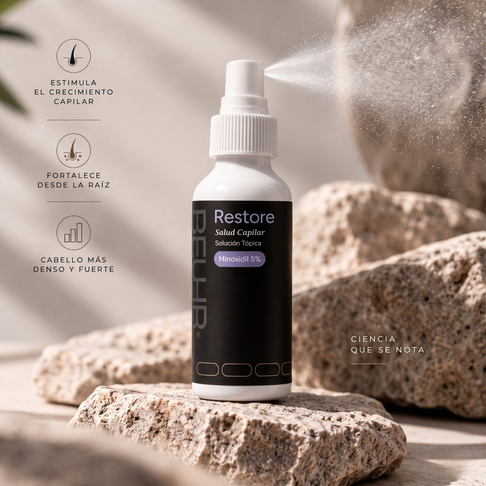
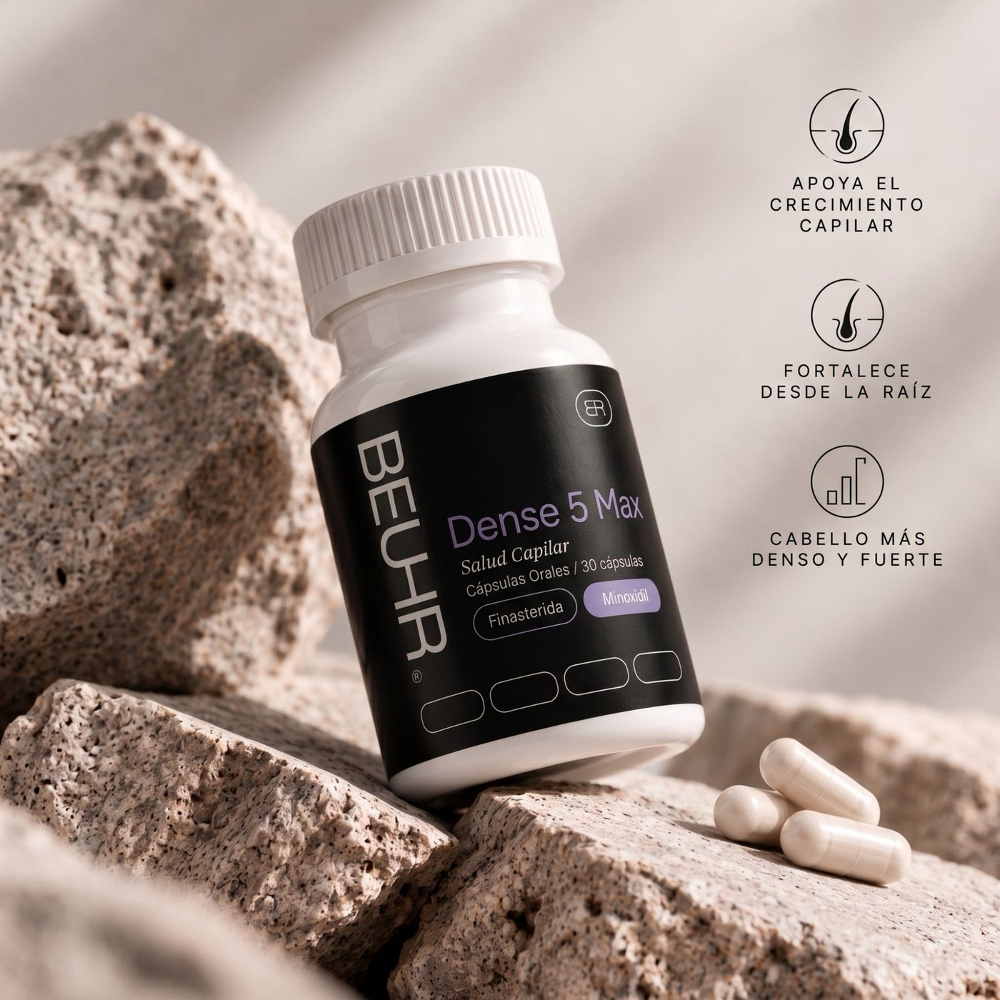

Cada caso recibe una valoración propia
Llena el cuestionario para que tu médico conozca tu historial, tu patrón de caída y lo que ya probaste antes, y así decida contigo el mejor camino.
La alopecia androgenética es la caída de cabello de origen hereditario y hormonal: la DHT, un andrógeno que produce tu cuerpo, miniaturiza el folículo y el cabello sale cada vez más fino y más corto. Suele notarse en las entradas, en la corona o en ambas zonas, y casi siempre avanza poco a poco. No se cura, se controla, por eso el tratamiento se plantea a largo plazo y con seguimiento. En BEUHR, un médico revisa tu caso en línea y, si eres candidato, define tu tratamiento oral o tópico, que llega discreto a tu casa.
“La caída de cabello no se resuelve en una semana. Por eso te atiende la misma persona durante todo tu tratamiento: alguien que conoce tu punto de partida y ajusta contigo lo que haga falta.”
Médico dedicado
Nombre y cédula desde el día uno
Respuesta en 24 h hábiles

“Llené el cuestionario en la noche y al día siguiente ya me había escrito mi médico. Me explicó la caída de las primeras semanas antes de que pasara.”
“Llevaba años dejándolo para después. Lo que más me gustó fue no tener que ir a un consultorio y que todo llegó discreto.”
“Lo tomo antes de dormir y me ayuda a bajar revoluciones. Sin sentirme tirado al día siguiente.”
“Buen producto, lo volvería a comprar.”
01

La DHT es el andrógeno que miniaturiza el folículo. Con cada ciclo, el cabello sale más fino y más corto, hasta que la zona empieza a verse rala. Por eso la caída avanza poco a poco.
02
La línea del cabello retrocede en la frente y en las sienes. Suele ser de las primeras zonas donde se nota y, con los años, muchas veces avanza en forma de M hacia la coronilla.
El cabello se vuelve más fino en la parte alta de la cabeza. Muchas veces lo notas primero en una foto o con la luz de frente, y puede aparecer al mismo tiempo que las entradas.
03
La finasterida bloquea la DHT que miniaturiza el folículo. En BEUHR la encuentras en DENSE MAX (oral) y RESTORE MAX (tópico), siempre con receta.
04

El minoxidil reactiva folículos en reposo y prolonga la fase de crecimiento. Lo encuentras en DENSE (oral) y RESTORE (tópico), con receta.
¿Hace cuánto tiempo notas pérdida de cabello?
Tras revisar tu caso, tu médico define si te conviene la vía oral, la tópica o ambas, y en qué dosis. Todo llega discreto a tu casa. Venta bajo prescripción. Requiere valoración médica.
Requiere receta
RESTORE MAXReactiva folículos en reposo y prolonga la fase de crecimiento.
Minoxidil 5% en solución (RESTORE).
Versión MAX con finasterida 0.1% en spray de 120 ml.
Absorción sistémica de finasterida hasta 90% menor que la oral.
Venta bajo prescripción. Requiere valoración médica.
Requiere receta
DENSE 2.5Requiere receta
DENSE MAX 2.5Una cápsula al día, sin aplicaciones tópicas.
Minoxidil oral de 2.5 mg o 5 mg.
Minoxidil oral + finasterida 1 mg en una sola toma.
Bloquea la DHT que miniaturiza el folículo.
Activa el folículo desde el interior.
Día 0 · Tomamos tu foto
Semanas 2 a 8 · Tu médico te busca
Mes 3 · Primer corte formal
Meses 4 a 6 · Seguimiento con fotos
Mes 6 · Comparación honesta
Mes 12 · Plan de mantenimiento
Mes 13+ · Te avisamos antes
Te conectamos con un médico que revisa tu caso de forma individual y define el producto y la dosis que tienen sentido para ti, con seguimiento durante todo tu tratamiento.
Llena el cuestionario para que tu médico conozca tu historial, tu patrón de caída y lo que ya probaste antes, y así decida contigo el mejor camino.

Tu historial familiar y tu patrón de caída le ayudan a elegir entre la vía oral, la tópica o ambas, y la dosis exacta que tiene sentido para tu caso.
* Horas hábiles. Los resultados de cada tratamiento varían y los evalúa tu médico.
Médico dedicado
Cabello y salud sexual
Llena el cuestionario. Un médico revisa tu caso y, si no eres candidato, te lo dice y te propone otra ruta.
Depende de cada caso. El mes 6 es el plazo mínimo para una comparación honesta contra tu foto del día cero; ahí tu médico te dice si vas bien o si hay que ajustar.
Los efectos adversos de la finasterida son poco frecuentes (menos de 2%) y reversibles. Tu médico revisa tu historial antes de recetar y puedes reportarle cualquier síntoma: responde en 4 h hábiles.
1
Responde unas preguntas breves sobre ti y lo que quieres resolver. Es confidencial
2
Un médico revisa tu caso en 24 h hábiles y define si eres candidato y en qué dosis
3
Recibes tu enlace de pago y tu tratamiento llega discreto a tu casa, en todo México
Pagos seguros
Es la forma más común de caída de cabello en hombres. Tiene un componente hereditario y uno hormonal: la DHT, un andrógeno que produce tu cuerpo, miniaturiza el folículo. Con cada ciclo, el cabello nace más fino y más corto, hasta que la zona se ve rala. Avanza a ritmos distintos en cada persona, por eso tu médico revisa tu caso y tu foto de inicio antes de definir cualquier tratamiento con receta y te acompaña con seguimiento mes a mes.
No es una enfermedad que se cure. Se controla, y por eso el tratamiento se plantea a largo plazo, con seguimiento: si suspendes, se pierde lo ganado, así que tu médico te avisa antes de que se acabe tu plan.
Casi siempre empieza poco a poco. Notas más cabello en la regadera o en la almohada, las entradas avanzan o te peinas diferente para cubrir una zona.
La combinación de genética y hormonas. Por eso el cuestionario te pregunta si tu padre, tus hermanos o tus abuelos tienen calvicie: tu historial familiar ayuda a tu médico a entender tu caso.
No toda caída es alopecia androgenética. Si la caída es repentina, en parches o empezó después de una enfermedad, tu médico puede pedirte una valoración en persona.
Todos son de venta bajo prescripción y tu médico define cuál te conviene:
Si suspendes, se pierde lo ganado. Por eso, a partir del mes 12 el objetivo pasa de ganar a conservar, y tu médico replantea contigo el esquema de mantenimiento.
Venta bajo prescripción. Requiere valoración médica.
La alopecia androgenética no se cura, se controla. Por eso el tratamiento es a largo plazo y con seguimiento de tu médico.
La combinación de herencia y hormonas: la DHT, un andrógeno, miniaturiza el folículo y el cabello sale cada vez más fino.
DENSE es oral: una cápsula al día. RESTORE es tópico: se aplica en el cuero cabelludo. Tu médico define cuál te conviene, o si conviene combinarlos.
DENSE MAX y RESTORE MAX suman finasterida al minoxidil: un activo bloquea la DHT y el otro activa el folículo.
En las semanas 2 a 8 puede haber más caída; es por sincronización y es esperada. Hacia el mes 3 la caída baja a niveles normales y el mes 6 es el plazo mínimo para una comparación honesta. Cada caso es distinto.
Sí. El día 0 documentamos tu punto de partida con una foto: sin foto basal no sabrás si mejoraste. Tu médico la usa como referencia en cada seguimiento.
Un médico dedicado: la misma persona durante todo tu tratamiento, con nombre y cédula desde el día uno. Responde en 24 h hábiles, y en 4 h hábiles si reportas un síntoma.
Sí. Entre las semanas 2 y 8 puedes ver más cabello en la almohada o en la regadera. Es señal de actividad, no de daño, y tu médico te busca en esa etapa.
Sí: si suspendes, se pierde lo ganado. Mantener es una decisión, y te avisamos antes de que se acabe tu plan.
Los tratamientos capilares van de $1,947 MXN (DENSE 2.5) a $2,397 MXN (RESTORE MAX). El precio final se confirma con tu receta.
Sí. Llenas el cuestionario, un médico revisa tu caso y, si eres candidato, recibes tu tratamiento en casa.